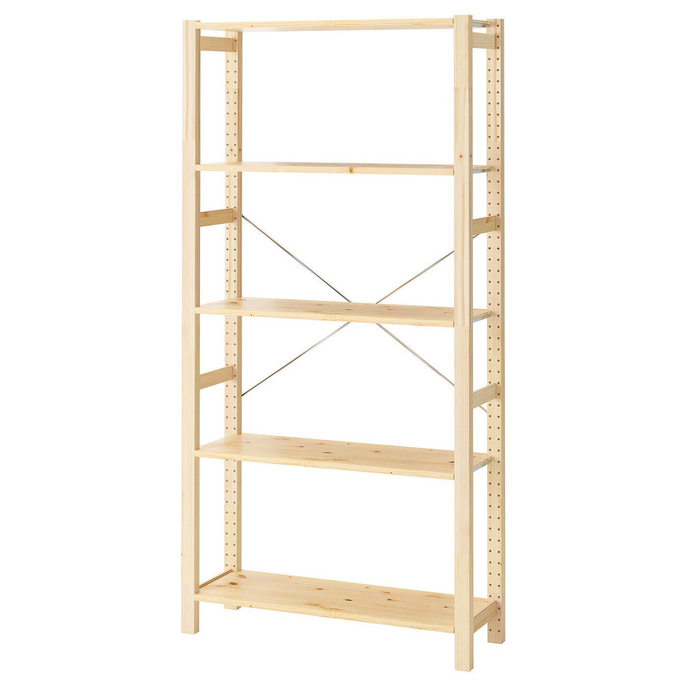
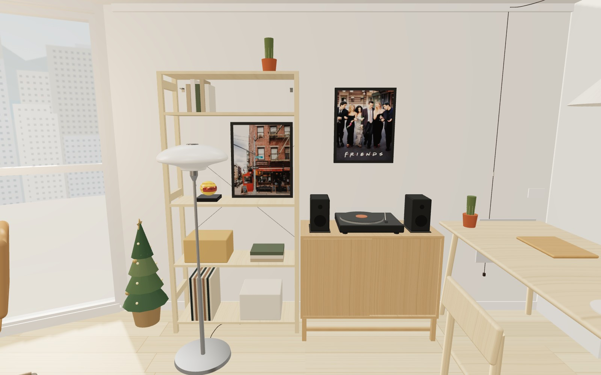
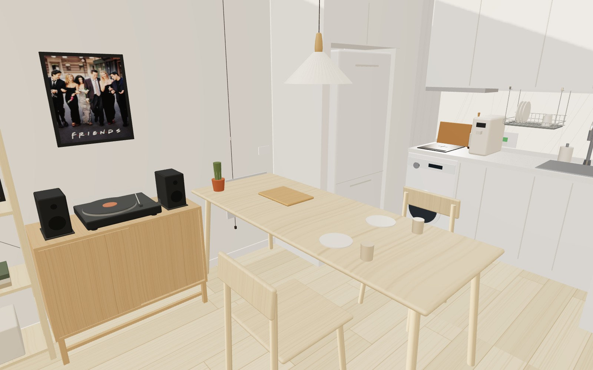
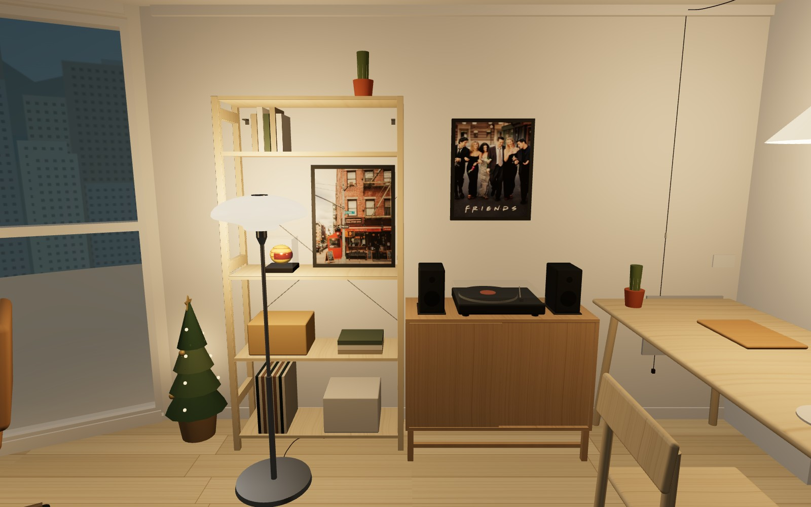

왼쪽 · IKEA IVAR 이바르
폭89 × 깊이30 × 높이179cm
무도장 소나무 · 선반5장 · X자 지지대
123,900원
배송·벽고정 부품·설치비 미확정. 전도 방지 벽고정이 필요합니다.
실제 제품 보기 ↗왼쪽은 밝은 소나무 선반으로 가볍게, 오른쪽은 오크 수납장과 검정 오디오로 차분하게. D안에서 선반과 LP장 조합을 바꾼 별도 배치예요. D안도 그대로 비교할 수 있어요.


폭89 × 깊이30 × 높이179cm
무도장 소나무 · 선반5장 · X자 지지대
배송·벽고정 부품·설치비 미확정. 전도 방지 벽고정이 필요합니다.
실제 제품 보기 ↗
폭93 × 깊이40 × 높이75cm
슬라이딩 문2개 · 낮은 다리형 수납장
기본배송 무료. LP판 내부 수납 유효 높이·하중은 미확인입니다.
실제 제품 보기 ↗2026.10.28 확인한 상품값입니다. 판매가·재고·배송 지역 조건은 주문 시 달라질 수 있어요. 위 사진 속 촬영 소품은 가구에 포함되지 않습니다.
D안보다99,500원 낮아요. 두 가구 합계는491,900원입니다.
총38개 품목 중 나머지36개는 D안과 같아요. 위 총액에는 예비비30만원과 큐커 계획비가 포함되어 있어요. 냉장고·매트리스·무선청소기 본체는 별도이며 미확정 배송·설치가 남아 있습니다. 전체 내역 보기 ↗

